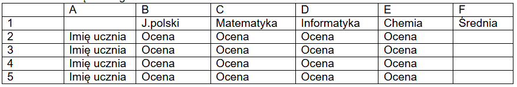

Nauczanie zdalne
Klasa 7Ga
wychowawca Renata Szpekaluk
Pi?tek 24.04.2020r
1.Uspr.z j.pol – Piotr – zestaw ?wiczeñ wys?any poczt? elektroniczn? do rodziców.
2.Muzyka
Temat: Powtórzenie piosenki pt.,, Pod jab?oni?’’.
1. Przypomnienie tekstu i melodii piosenki,, Pod jab?oni?''.
https://www.youtube.com/watch?v=7z5bBk0b6X8
I zw.
Dobrze siedzie? pod jab?oni?
w po?udniowym s?oñcu,
dobrze patrze? na motyle,
kwiaty fruwaj?ce,
ch?on?? cisz?, przesycon?
nagrzanym powietrzem,
albo ma?e, b?ahe my?li
rozpina? na wietrze.
Dobrze chmurki ciep?ych marzeñ
jak ga??? nagina?
i wypija? s?odki zapach,
niczym kielich wina.
Ref.
Nape?niam si? w czas s?oneczny,
w pogod?,
prze¿yciami radosnymi,
jak miodem.
Zbieram promyk po promyku,
zbieram kropl? do kropelki,
na dni smutne,
na dni puste,
na wypadek wszelki.
II zw.
Jak w bezpiecznym, ciep?ym ulu,
tak w sercu zamykam
smak przygody, u?miech szcz??cia,
co tak ?atwo znika.
Cieñ kochania zapatrzony
w gwiezdne niebo pragnieñ
i beztroski urok lata,
zanim w jesieñ spadnie.
Zim? zejd? na dno serca
i zapachnie sadem,
po?ród skarbów pozbieranych
Na wszelki wypadek.
Ref.
Nape?niam si?...
2. Po?wicz ?piew I zwrotki i refrenu piosenki, pos?uchaj II zwrotki piosenki.
3. Zapisz w zeszycie temat lekcji i refren piosenki. Je¿eli mo¿esz to narysuj drzewo kwitn?cej jab?oni.
3. J.angielski
opic: Numbers 1-100 – Liczby 1-100
Ju¿ powtórzyli?my liczby 1-20 (TABELA w zeszycie). Powtórzmy je jeszcze raz.
Otwórzcie link i mówcie razem.
https://www.youtube.com/watch?v=D0Ajq682yrA
Zadanie - Przepiszcie liczby – dziesi?tkami od 20-100 do zeszytu.
20 – twenty
30 – thirty Zapami?taj!
40 – forty Dziesi?tki maj? koñcówk?: -ty!!!!
50 – fifty
60 – sixty
70- seventy
80 – eighty
90 – ninety
100 – one hundred
A teraz obejrzyjcie krótki film i ?wiczcie razem z panem Jackiem Hartmannem. Mówcie liczby dziesi?tkami 20, 30, 40, ... . Mo¿ecie te¿ razem wykonywa? ?wiczenia gimnastyczne.
https://www.youtube.com/watch?v=W8CEOlAOGas
4.Technika
Temat: Po??czenia ?rubowe.
https://www.youtube.com/watch?v=OeEYczv2adU
Na krótkim filmie zobaczy?e? narz?dzia do wykonania po??czenia ?rubowego. Za pomoc? ?ruby i nakr?tki , mo¿emy bezpiecznie po??czy? elementy ?opatki z blachy. Do wykonania nakr?tki s?u¿y gwintownik. w prezentowanym filmie s? równie¿ narz?dzia do wykonania ?ruby. obejrzyj filmik i odpowiedz na pytanie? Jak nazywa si? narz?dzie do wykonania ?ruby? Na odpowied? czekam do przysz?ego pi?tku pod znanym wam numerem telefonu. Pozdrawiam
5.Biologia
Temat : Ucho narz?d s?uchu i równowagi.
1. Obejrzyj filmik:
https://www.youtube.com/watch?v=g0mv5C_--lo
https://www.youtube.com/watch?v=pooeW9Oop5Q
W zeszycie wykonaj zadanie nr.1.
Zad 1. Wykre?l kolorowe wyrazy tak , aby powsta?y zdania prawdziwe.
a). Receptory s?uchu znajduj? si? na b?onie b?benkowej / w ?limaku.
6.Matematyka
Temat : Obj?to?? graniastos?upa prostego.
Dokoñcz wzór na obj?to?? graniastos?upa prostego
V = Pp x…...
Zadanie 1
Oblicz obj?sto?? prostopad?o?cianu o wymiarach a= 5 cm, b= 4cm, c=7cm.
Zadanie 2
Oblicz obj?sto?? prostopad?o?cianu o wymiarach a= 5,5 cm, b= 4cm, c=7cm.
Zadanie 3 i 4 dla ch?tnych
Zadanie 3
Oblicz obj?sto?? prostopad?o?cianu o wymiarach a= 10 cm, b= 8cm, c=14cm.
Zadanie 4
Oblicz obj?sto?? pude?ka o d?ugo?ci kraw?dzi a= 50 mm, b= 40mm, c=70mm.
7.Uspr.z mat- Bartek – zestaw ?wiczeñ wys?any poczt? elektroniczn? do rodziców
Czwartek 23.04.2020r
1.Uspr.z j.pol – Piotr - zestaw ?wiczeñ wys?any poczt? elektroniczn? do rodziców.
2.Plastyka
Praca z plastelin?.
1. Na kartce papieru narysuj lub wydrukuj kontu postaci cz?owieka.
2. Przygotowan?, ugniecion? plastelin? oklej kontur czlowieka. Dodatkowo wykonaj z plasteliny szczego?y postaci. (strój, czesci cia?a - oczy, usta, nos.)
3.Technika.
Temat: Bezpieczne ??czenie Blach - Nitowanie
https://www.youtube.com/results?search_query=nitowanie+r%C4%99czne
Zauwa¿ , ¿e po??czenie za pomoc? nitów jest trwa?e i skuteczne. W naszej pracowni po??czymy w ten sposób elementy ?opatki z blachy ocynkowanej. Zastanów si? , czy s? jeszcze inne sposoby bezpiecznego po??czenia elementów z blachy? na odpowied? czekam do pod znanym wam numerem telofonu. Pozdrawiam.
4.Historia
TEMAT: Skutki cywilizacyjne i kulturowe wielkiej wojny
Ogl?dnij krótki film:
https://www.youtube.com/watch?v=aeNVCHKfNVs
I wojna by?a konfliktem, który pozostawi? po sobie szereg powa¿nych konsekwencji, zarówno spo?ecznych, jak i gospodarczych oraz ekonomicznych. Skutkiem dzia?añ wojennych by?o zmniejszenie si? liczby mieszkañców Europy. Podczas wojny poleg?o blisko 9 mln ludzi.
5 i 6 J.polski (2h )
Temat: O tym, co w ¿yciu jest wa¿ne.
Zapisz do zeszytu temat i 5 warto?ci, które s? najwa¿niejsze w ¿yciu:
1. Zdrowie
2. Mi?o??
3. Rodzina
4. Przyja?ñ
5. Poczucie bezpieczeñstwa
Napisz, co jest dla Ciebie najwa¿niejsze w ¿yciu.
Temat :Niezwyk?y ?wiat natury w wierszach B. Le?miana "T?cza"
Boles?aw Le?mian ur. 22.01.1877r w Warszawie, zm 05.11.1937r - polski poeta i prozaik ¿ydowskiego pochodzenia.
Zapisz temat lekcji, przepisz podan? zwrotk? i przeczytaj
S?ycha? go by?o, jak po m?odym ¿ycie
Bieg coraz ?pieszniej - ciep?y deszcz majowy
Zbryzgany s?oñcem, co przez ob?ok p?owy
Wzd?u¿ mu kropliste rozwidnia?o nicie.
Narysuj kolorow? t?cz?.
7. Uspr.z matematyki –Piotr / uspr. – Bartek – zestaw ?wiczeñ wys?any poczta elektroniczn? do rodziców.
8. Informatyka.
Temat: Powtórzenie
Stwórz w Excelu dziennik swojej klasy.
1. W kolumnie A (pocz?wszy od komórki A2) wpisz imiona Twoich kolegów z klasy i Twoje
2. W wierszu 1 (pocz?wszy od komórki B1) wpisz przedmioty: J.polski, Matematyka, Informatyka i Chemia.
3. Wpisz oceny (takie jak uwa¿asz) - po jednej z ka¿dego przedmiotu.
4. Oblicz ?redni? ka¿dego ucznia

W komórk? F2 wpisz =?rednia(B2:E2)
Powtórz to w komórce F3,F4 i F5. Pami?taj zmieñ zakres komórek!
?roda 22.04.2020r
Plan klasy 7GA
1.Uspr. z j. pol – Piotr – zestaw ?wiczeñ wys?any poczt? elektroniczn? do rodziców.
2.Chemia
Temat: Tlenki metali i niemetali
Obejrzyj filmik ( do trzynastej minuty)
https://www.youtube.com/watch?v=AisZPD0G3sw
1. Napisz w zeszycie jak dzielimy tlenki.
2. Napisz który z tlenków jest tlenkiem metalu a który niemetalu
tlenek potasu, magnezu, litu, fosforu (III), w?gla (II), sodu, azotu (V)
3. Napisz wzór ogólny tlenku
4. Napisz wzór sumaryczny
tlenek potasu. magnezu, sodu, w?gla (II) w?gla (IV), fosforu (III), cyny (IV), siarki (VI), siarki (IV)
3. Historia
TEMAT: Konferencja pokojowa w Pary¿u.
Notatka:
Konferencja pokojowa by?a zorganizowana w Pary¿u po zakoñczeniu I wojny ?wiatowej. Trwa?a od 1919 do 1920 roku. Bra?o w niej udzia? 27 zwyci?skich pañstw.
Ogl?dnij krótki film:
https://www.youtube.com/watch?v=nmZoPVvGENc
4 i 5. Matematyka
Temat : Pole powierzchni graniastos?upa prostego.
Zadanie tekstowe zwi?zane z obliczaniem pól powierzchni graniastos?upów prostych.
Zadanie 1
Dokoñcz wzór na pole graniastos?upa prostego. Podaj jego nazw?.
Pp=6x...
To jest wzór na pole powierzchni........................
Pp= 2x(.......................
To jest wzór na pole powierzchni.......................
Zadanie 2
Ile cm2 blachy trzeba kupi? na zrobienie modelu prostopad?o?cianu o d?ugo?ci kraw?dzi a= 4cm, b= 5cm, c= 3cm?
Zadanie 3
Pokój ma kszta?t prostopad?o?cianu o d?ugo?ci 4m, szeroko?ci 3 m i wysoko?ci 2,5m. Ile metrów kwadratowych ?cian i sufitu trzeba pomalowa??
( narysuj siatk? bry?y , to pomo¿e Ci rozwi?za? zadanie)
Zadanie 4
Pokój ma d?ugo?? 3m, a szeroko?? 3m. Ile m2 potrzeba wyk?adziny dywanowej na porycie ca?ej powierzchni pod?ogi.
Zadanie 5
Ile zap?acisz za wyk?adzin? dywanow? z zadania 4 je¿eli 1m2 wyk?adziny dywanowej kosztuje 24,50z??
Zadanie 6
£azienka ma d?ugo?? 2m, a szeroko?? 3,5m. Ile m2 kafli trzeba kupi? na ca?? powierzchni? pod?ogi.
Zadanie 7
Ile zap?acisz za kafelki do ?azienki z zadania 6 je¿eli 1m2 kafli kosztuje 28,50z??
Temat : Obj?to?? graniastos?upa prostego. Jednostki obj?to?ci.
Obejrzyj na youtube lekcj? matematyki dotycz?c? obj?to?ci granoastos?upów.
https://www.youtube.com/watch?v=i06eA4UnfoA
Zapisz w zeszycie
Graniastos?up prawid?owy to graniastos?up prosty, którego podstaw? jest wielok?t foremny. Obj?to?? graniastos?upa liczymy ze wzoru V=Pp*H, gdzie Pp to pole podstawy, a H to wysoko??. Pole ca?kowite liczymy ze wzoru Pc=2*Pp+Pb, gdzie Pp to pole powierzchni bocznej, czyli suma pól wszystkich ?cian bocznych.
Jednostk? obj?to?ci s? : mm3 cm3, dm3, m3….
Zamiana jednostek sze?ciennych.
Przyk?ad 1
Zamiana jednostek sze?ciennych.
Zamian? jednostek sze?ciennych zaczynasz od równania
1 m=100 cm
1dm = 10cm
1cm = 10mm
Zamieñ 1 m3 na cm3.
To ?atwe.
Nast?pnie obie strony tego równania podnosisz do pot?gi 3
100 x 100 x 100 = otrzymuj?c, ¿e 1m3=1000 000 cm3.
Dalej ju¿ mo¿esz wpisa? wynik, bo ju¿ wiesz, ile jest centymetrów sze?ciennych w metrze sze?ciennym.
Zadanie 1
Zamieñ:
2 m3 na cm3=
3 m3 na cm3 =
4 m3 na cm3=
5 m3 na cm3=
Zadanie 2
Zamieñ:
2 dm3 na cm3=
3 dm3 na cm3 =
4 dm3 na cm3=
5 dm3 na cm3=
Zadanie 3
Zamieñ:
2 cm3 na mm3=
3 cm3 na mm3 =
4 cm3 na mm3=
5 cm3 na mm3=
Przyk?ad 2
Oblicz obj?to?? graniastos?upa, który w podstawie ma kwadrat o boku 4 cm, a jego wysoko?? wynosi 7 cm.
Najpierw musimy obliczy? pole podstawy graniastos?upa. W naszym przypadku mamy w podstawie kwadrat o boku d?ugo?ci 4 cm, czyli jego pole obliczamy jako
Pp= a2= a x a = 4 x 4 = 16cm2
Teraz ju¿ mo¿emy skorzysta? ze wzoru na obj?to?? graniastos?upa:
V = Pp x H = 16cm2 x 7 cm = 112 cm3
Odp: Obj?to?? graniastos?upa wynosi 112 cm3 .
6.J.polski
Temat: Moje marzenia. Tworzenie tekstu.
Przeczytaj fragment wiersza:
Marzenia s? fikcj?, a ¿ycie trwa dalej
Wi?c my?l o przysz?o?ci i d?ugo nie szalej,
Post?puj m?drze i decyduj z rozwag?
A wejdziesz w doros?o?? z nale¿yt? powag?.
Zapisz temat lekcji i przepisz podany tekst
Marzenia s? czym? wspania?ym, ale nie mo¿na nimi ¿y?.
¯ycie jest prawdziwe, a one s? fikcj?. Ka¿demu wolno marzy?.
W domu:
Moje najwi?ksze marzenie"
Moim najwi?kszym marzeniem jest............................................................................................
7.Godz.wychowawcza
Konsultacja telefoniczna z rodzicami, omówienie organizacji pracy zdalnej, pomoc
w lekcjach, wsparcie rodziców.
8.Geografia
Temat: Podsumowanie wiadomo?ci.
Przepisz do zeszytu i uzupe?nij zdania w?a?ciwymi przyk?adami us?ug
( wybierz po 1 przyk?adzie- turystyczne, pocztowe, transport):
1. Us?ugi:
a) Informacyjne to...
b) Dystrybucyjne to...
c) Rekreacyjno-zdrowotne to...
2. Przepisz do zeszytu poni¿sze nazwy miejscowo?ci wraz z ich opisem:
A) Wieliczka
B) Malbork
C) Toruñ
a) ?redniowieczna budowla warowna
b) Zabytkowa kopalnia soli
c) ?redniowieczny zespó? miejski
3. Podkre?l co dominuje w polskim eksporcie:
jachty, sprz?t AGD, ropa naftowa, tablety
zadanie wy?lij na adres : boz_lis@interia.pl
Obejrzyj krótki film z Kopalni Soli w Wieliczce
https://www.youtube.com/watch?v=m7a_-BW0Fkw&list=PLxBBt5wRZ_PPtchWAxDyda_p3zskf2JQj&index=5
zach?cam Was do obejrzenia wszystkich filmów na str:
https://www.kopalnia.pl/turysta-indywidualny/o-kopalni/zostan-w-domu-kopalnia-soli-wieliczka-zaprasza
Wtorek 21.04.2020r
Plan lekcji klasa7ga
1. Uspr – Piotr zestaw ?wiczeñ wys?any poczt? elektroniczn? do rodziców.
2. Chemia
Temat: Sprawdzian
Odpowiedz na pytania:
1. Napisz wzór chemiczny wody.
2. Uzupe?nij
Woda:
Stany skupienia - 1......................2..........................3..........................
Barwa-
Zapach-
Temperatura wrzenia-
3. Narysuj obieg wody w przyrodzie - schemat.
4. Oblicz st?¿enie procentowe roztwory (Cp) wiedz?c ¿e w 100 g roztworu jest 50 g substancji rozpuszczonej.
Wy?lij go na mój adres mailowy lub zrób zdj?cie i wy?lij telefonicznie.
3.Matematyka
Temat : Pole powierzchni graniastos?upa prostego.
Zadanie tekstowe zwi?zane z obliczaniem pól powierzchni graniastos?upów prostych.
Zadanie 1
Dokoñcz wzór na pole graniastos?upa prostego. Podaj jego nazw?.
Pp=6x................
To jest wzór na pole powierzchni................
Zadanie 2
Dokoñcz wzór na pole graniastos?upa prostego. Podaj jego nazw?.
Pp= 2x(................
To jest wzór na pole powierzchni................
Zadanie 3
Ile cm2 kolorowego papieru potrzeba na oklejenie kostki o d?ugo?ci kraw?dzi a= 9cm.
Podaj nazw? bry?y.
Ta bry?a nazywa si?................
Zadanie 4
Ile cm2 kolorowego papieru potrzeba na oklejenie kostki o d?ugo?ci kraw?dzi a= 9cm, b= 8cm, c= 7cm.
Podaj nazw? bry?y.
Ta bry?a nazywa si?................
Praca domowa
Zadanie 5
Uzupe?nij luki w zadaniach.
Sze?cian ma.............. ?cian. Ka¿da ze ?cian ma kszta?t.............W sze?cianie jest .............kraw?dzi i.............wierzcho?ków. Z ka¿dego wierzcho?ka wychodz? .............kraw?dzie. Bry?a, której w zadaniu podana jest d?ugo?? jednej kraw?dzi nazywa si?..............Kostka do gry planszowej najcz??ciej ma kszta?t.
Zadanie 6
Uzupe?nij luki w zadaniach.
Prostopad?o?cian ma .............?cian. W prostopad?o?cianie jest.............kraw?dzi i .............wierzcho?ków. Bry?a, której w zadaniu podana jest d?ugo?? kraw?dzi a, b oraz c nazywa si?............. Z ka¿dego wierzcho?ka wychodz? .............kraw?dzie. Pude?ko do zapa?ek najcz??ciej ma kszta?t.
4.Uspr. matem – Piotr
/uspr.TUS- Bartek – zestawy ?wiczeñ wys?ane drog? elektroniczn? do rodziców.
5.J.angielski
dla Bartka
Przepisz temat do zeszytu.
Topic: English is on Monday. - J?zyk angielski jest w poniedzia?ek.
Zad. 1 Powtórz nazwy przedmiotów szkolnych w jezyku angielskim i polskim.
Jakie przedmioty lubisz? Dokoñcz zdania po polsku i po angielsku.
Ja lubi? ........................................... - I like ..............................................
Jakich przedmiotów nie lubisz? Dokoñcz zdania po polsku i po angielsku.
Ja nie lubi? ..................................... - I don’t like ......................................
Dzisiaj nauczymy si? odpowiada? na pytania typu: ‘Kiedy jest matematyka?’
S?owniczek:
When? [?en] - Kiedy?
on Monday – w poniedzia?ek
Zadanie 2 Napisz przyk?ady do zeszytu i odpowiedz na pytania.
When is Art? Kiedy jest plastyka?
Art is on Monday. Plastyka jest w poniedzia?ek.
When is History? Kiedy jest historia?
History is on Wednesday and Thursday. Historia jest w ?rod? i czwartek.
When is Music? ........................
When is Geography? ..........................
dla Piotra
Przepisz temat do zeszytu.
Topic: English is on Monday. - J?zyk angielski jest w poniedzia?ek.
Zad. 1 Powtórz nazwy przedmiotów szkolnych w jezyku angielskim i polskim.
Jakie przedmioty lubisz? Dokoñcz zdanie po polsku i po angielsku.
Ja lubi? ........................................... - I like ..............................................
Jakich przedmiotów nie lubisz? Dokoñcz zdanie po polsku i po angielsku.
Ja nie lubi? ..................................... - I don’t like ......................................
Dzisiaj nauczymy si? odpowiada? na pytania typu: ‘Kiedy jest matematyka?’
S?owniczek:
When? [?en] - Kiedy?
on Monday – w poniedzia?ek
Zadanie 2 Napisz przyk?ady do zeszytu.
When is Polish? Kiedy jest j?zyk polski?
Polish is on Monday. J?zyk polski jest w poniedzia?ek.
When is Maths? Kiedy jest matematyka?
Maths is on Wednesday. Matematyka jest w ?rod?.
e?li uznasz, ¿e uczniowie mog? mi przes?a? odrobione zadania podaj? maila :)
Lekcj? i zadania macie wykona? do zeszytu . Po ich zrobieniu np. fotografujecie i zdj?cie przesy?acie na mail bsi5matmabz20@o2.pl
6.Fizyka
Temat: Ci?nienie hydrostatyczne.
zapisz do zeszytu;
W otwartych zbiornikach wodnych panuje ci?nienie hydrostatyczne tym wi?ksze im wi?kszy jest s?up wody i im wi?ksza jest g?sto?? cieczy. Zwi?zane jest to z dzia?aniem si?y ci?¿ko?ci zarówno wody jak i powietrza (warto?ci te si? sumuj?).
zad.1.
Zobacz do?wiadczenia
https://www.youtube.com/watch?v=EJRaVhpumrE&t=13s
Zapisz wzór z którego mo¿na obliczy? warto?? ci?nienia hydrostatycznego oraz zapisz co oznaczaj? jego zmienne p, h ,g, d.
7.J.polski
Temat: Bracia, siostry i kuzynki czyli o rodzinie wyrazów.
Zapisz do zeszytu temat i przepisz notatk?
Rodzina wyrazów - grupa wyrazów zawieraj?cych ten sam rdzeñ, czyli wywodz?cy si? od jednego wyrazu podstawowego.
Przyk?adowe rodziny wyrazów:
- dom - domek, domowy, domownik
- lód - lodowy, lodówka, lody
- brat - bratanek, bratowa, bratanica
- cukier - cukrowy, cukierek, cukiernica
Przeczytaj zapisane wyrazy
8.Bfb Piotr / uspr SI Bartek – zestawy ?wiczeñ wys?ane poczt? elektroniczn? do rodziców.
Poniedzia?ek 20.04.2020r
1. Uspr. B.Pyrz- Piotr- wys?ane na prywatny adres mailowy do rodzica
2. J.angielski
Przepisz temat do zeszytu.
Topic: School subjects - Przedmioty szkolne
Powtórzenie z poprzedniej lekcji:
Zad. 1 Przeczytaj g?o?no nazwy dni tygodnia w j?zyku angielskim i odpowiedz na pytania:
s?owniczek:
favourite [fejwerit] – ulubiony
today [tudej] - dzisiaj
Do you like Monday? - .......................... (Yes, I do. / No, I don’t.)
What is your favourite day? - My favourite day is ….........................................
What day is today? Jaki dzisiaj jest dzieñ? - Today is ...............................
Nowy temat: School subjects [skul sobd¿ekc] - przedmioty szkolne
Zadanie 2 Przepisz do zeszytu nazwy przedmiotów szkolnych w j?zyku angielskim i polskim.
Polish – j?zyk polski
English – j?zyk angielski
Maths – matematyka
History – historia
Music [mjuzyk]– muzyka
Art – plastyka
R.E. [ar ii] - religia
P.E [pii ii] - w.f
I.T. [aj tii] – informatyka
Geography [ d¿iografi] - geografia
Chemistry [kemistri] chemia
Physics [fizyks] - fizyka
Zadanie 3 Przeczytaj wyrazy g?o?no kilka razy i próbuj je zapami?ta?.
3. Fizyka
Temat: Prawo Pascala
zapisz do zeszytu:
Prawo Pascala mówi, ¿e je?li na zamkni?t? w zbiorniku ciecz (lub gaz) dzia?amy si?? to wytworzone w ten sposób ci?nienie dzia?a jednakowo we wszystkich kierunkach i w ca?ej obj?to?ci tej cieczy (gazu).
Warto?? ci?nienia-si?y parcia F na ?ciank? o powierzchni S obliczamy ze wzoru
F = p·S p to ci?nienie jakie panuje w zbiorniku
Przyczyn? wyst?powania ci?nienia atmosferycznego (powietrza) i hydrostatycznego (wody) jest naciskanie warstw powietrza lub cieczy na warstwy znajduj?ce si? poni¿ej.
Obejrzyj film :
https://www.youtube.com/watch?v=kBK-V3NTOn8&t=542s
4. Biologia
Temat : Oko narz?d wzroku (str. 195)
Podr?cznik z biologii Puls ¯ycia kl. 7 dost?pny na stronie -
https://www.nowaera.pl/naukazdalna
1. Przeczytaj : Aparat ochronny . (195 str. )
2. Obejrzyj filmik:
https://www.youtube.com/watch?v=KIkHk__96Hg
3. Zapoznaj si? ze schematem budowa oka ( 196 str.)
W zeszycie wykonaj tylko zadanie nr.1.
Zad 1.
Wypisz najwa¿niejsze elementy aparatu ochronnego oka.
5. Geografia
Temat: Handel.
Odpowiedzi zapisz w zeszycie:
Wymieñ 3 produkty, które masz w domu i zosta?y wyprodukowane w Polsce?
Wymieñ 3 produkty, które masz w domu i zosta?y wyprodukowane za granic??
Co to jest handel?
Przeczytaj:
Wiesz ju¿, ¿e w domu s? produkty wyprodukowane w kraju np. mleko, sery jak równie¿ przywiezione z innych krajów np. kawa, herbata, banany. W ¿adnym pañstwie produkcja nie jest tak rozwini?ta, ¿e wystarcza?a na zaspokojenie potrzeb ca?ego spo?eczeñstwa. Dlatego du¿e znaczenie ma handel zagraniczny, który polega na odp?atnej wymianie dóbr i us?ug mi?dzy pañstwami.
Zapisz do zeszytu:
Import- zakup towarów w innym kraju
Eksport- sprzeda¿ towarów za granic?
W?ród towarów importowanych s?: samochody, komputery, ropa naftowa, gaz ziemny, kosmetyki, owoce, leki.
Eksportujemy g?ównie: autobusy, pojazdy szynowe, sprz?t AGD i RTV, jachty, meble, okna, drzwi, artyku?y ¿ywno?ciowe.
PESA Bydgoszcz eksportuje poci?gi do W?och i Niemiec. Zobacz na filmie, jak wygl?da nowoczesny poci?g.
https://www.youtube.com/watch?v=CUUHKfIrMtE
6 J.polski
Temat: W pogoni za marzeniami :Dziewczyna" - B. Le?miana.
Przeczytaj fragment utworu:
Dwunastu braci, wierz?c w sny, zbada?o mur od marzeñ strony,
A poza murem p?aka? g?os, dziewcz?cy g?os zaprzepaszczony.
Zapisz temat lekcji i podan? notatk? do zeszytu.
Dziewczyna to ballada o dwunastu braciach, którzy pragn?li odkry? tajemnice tego ?wiata. Us?yszeli kiedy? dochodz?cy zza muru g?os dziewczyny wo?aj?cej o pomoc. Wierzyli ,¿e skoro s?ysz? jej g?os, to na pewno ona istnieje.
7. Bfb – D. Radziejewski – Piotr
Uspr. M.Krowiak –Bartek
8. Bfb – D. R- Bartek
Uspr – J.Murzyniak – Piotr
Usprawniania s? wysy?ane na prywatny adres do rodziców
Archiwum
15-17.04
06-08.04
30.03-03.04
25-27.03